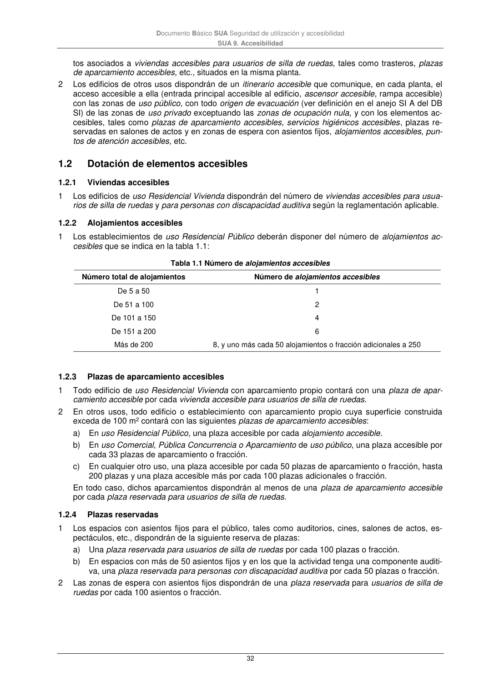

DB-SUA Seguridad de utilización y accesibilidad · edición 2022-06-14 · capa oficial
Documento DB-SUA-oficial · SHA-256 del PDF 3cfb5bbb135e8f02faebd8b844e03e8947994c18d4c9e675a7d2aa37d1cd5958
Copia fiel del PDF fuente · Fuente oficial
Ficha de la disposición en la fuente oficial
Formatos: JSON del segmento · Markdown
Dotación de elementos accesibles 1.2.1 Viviendas accesibles 1 Los edificios de uso Residencial Vivienda dispondrán del número de viviendas accesiblespara usua- rios de silla de ruedas y para personas con discapacidad auditiva según la reglamentación aplicable. 1.2.2 Alojamientos accesibles 1 Los establecimientos de uso Residencial Público deberán disponer del número de alojamientos ac- cesibles que se indica en la tabla 1.1: Tabla 1.1 Número de alojamientos accesibles Número total de alojamientos Número de alojamientos accesibles De 5 a 50 1 De 51 a 100 2 De 101 a 150 4 De 151 a 200 6 Más de 200 8, y uno más cada 50 alojamientos o fracción adicionales a 250 1.2.3 Plazas de aparcamiento accesibles 1 Todo edificio de uso Residencial Vivienda con aparcamiento propio contará con una plaza de apar- camiento accesible por cada vivienda accesible para usuarios de silla de ruedas. 2 En otros usos, todo edificio o establecimiento con aparcamiento propio cuya superficie construida exceda de 100 m2 contará con las siguientes plazas de aparcamiento accesibles: a) En uso Residencial Público, una plaza accesible por cadaalojamiento accesible. b) En uso Comercial, Pública Concurrencia o Aparcamiento de uso público, una plaza accesible por cada 33 plazas de aparcamiento o fracción. c) En cualquier otro uso, una plaza accesible por cada 50 plazas de aparcamiento o fracción, hasta 200 plazas y una plaza accesible más por cada 100 plazas adicionales o fracción. En todo caso, dichos aparcamientos dispondrán al menos de una plaza de aparcamiento accesible por cada plaza reservada para usuarios de silla de ruedas. 1.2.4 Plazas reservadas 1 Los espacios con asientos fijos para el público, tales como auditorios, cines, salones de actos, es- pectáculos, etc., dispondrán de la siguiente reserva de plazas: a) Una plaza reservada para usuarios de silla de ruedaspor cada 100 plazas o fracción. b) En espacios con más de 50 asientos fijos y en los que la actividad tenga una componente auditi- va, una plaza reservada para personas con discapacidad auditiva por cada 50 plazas o fracción. 2 Las zonas de espera con asientos fijos dispondrán de una plaza reservada parausuarios de silla de ruedaspor cada 100 asientos o fracción.
